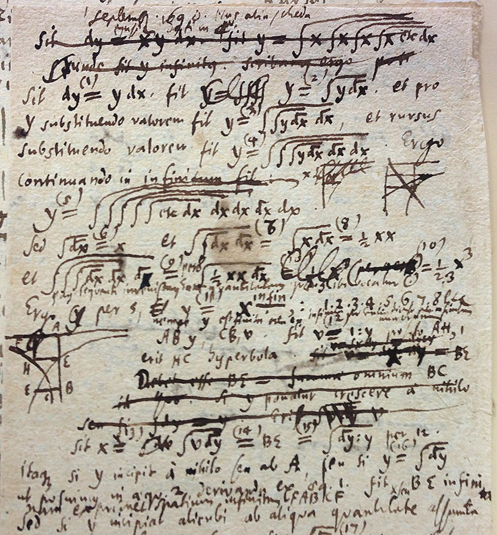
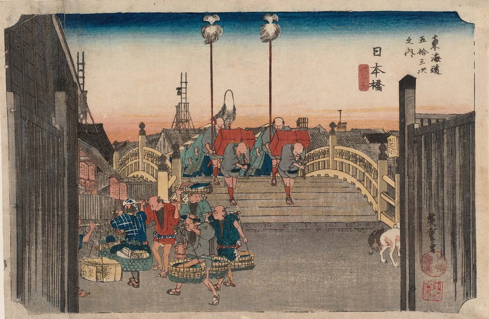
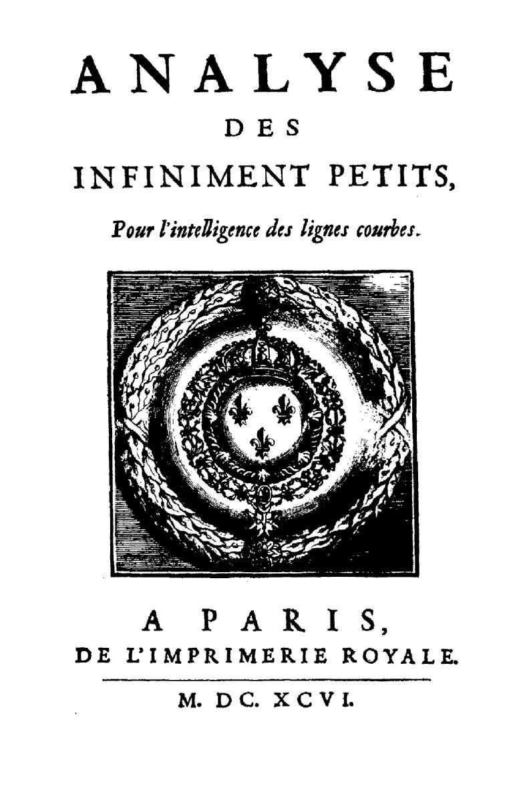

第8回
稜線をたどると、のぼりがくだりに変わる一点がある。
NPS／Patrick Myers（2017年、Great Sand Dunes National Park and Preserve）／Public domain／Wikimedia Commons（縮小し、下端を切り落として横長に切り出した）
第7回で作った導関数を「使う」回。曲線を接線で置き換える1次近似、$dx$ と $df$ を独立した記号として扱う微分、導関数をもう一度微分する $f''$ と $f^{(n)}$、グラフの増減と極値、そして $0/0$ の極限を導関数で解くロピタルの定理。どの結論も、平均値の定理から出発して導出する。
第7回の導関数の定義は、記号ごと思い出しながら書き直す（覚えている人は飛ばしてよい）。新しい記号は、これまでと同じく緑色の枠（記号）で「①読み方 ②日本語での意味 ③省略していない書き方 ④どこで出会うか」を書く。省略形（$df=f'(x)\,dx$ や $dy/dx$）は、省略の段階の箱で S0 から並べてから使う。
この回の定理（フェルマー、ロル、平均値、2階微分による判定、ロピタル）は、いちばん小さい例で確かめてから一般の形を書き、証明も1行に1操作で付ける。ただし「閉区間で連続な関数は最大値・最小値を持つ」という事実だけは、証明に実数の性質が要るので、認めて使うと明記する（第6回の連続の続きの話）。
最初に、この回で新しく説明する記号と、前の回で説明済みの記号を分けて並べる。右の列の「→」で説明のある場所へ飛べる。
| 記号 | 読み方 | ざっくりした意味 | 説明 |
|---|---|---|---|
| $L(x)$ | エル・エックス | $x=a$ での接線を表す1次式（1次近似） | →2.3 |
| $\Delta y$ | デルタ・ワイ | $y$ の実際の変化量 | →3.2 |
| $df,\ dx$ | ディー・エフ、ディー・エックス | $dx$ は入力の動き、$df$ は接線に沿った出力の動き | →3.3 |
| $f'',\ f^{(n)}$ | エフ・ダブルプライム、エフ・n階 | 導関数をもう一度（$n$ 回）微分したもの | →4.2 |
| $\dfrac{d^2f}{dx^2}$ | ディー・ツー・エフ、ディー・エックス・ツー | $f''$ のライプニッツ流の書き方 | →4.2 |
| 極大・極小・極値 | きょくだい、きょくしょう、きょくち | まわりの点より大きい（小さい）値 | →5.2 |
| 臨界点 | りんかいてん | $f'(c)=0$、または $f'(c)$ が存在しない点 | →5.4 |
| 平均値の定理 | へいきんちのていり | 平均の傾きと同じ傾きの点がある | →6.2 |
| 不定形 $\dfrac00,\ \dfrac\infty\infty$ | ゼロぶんのゼロ、むげんだいぶんのむげんだい | 値が決まらない形の極限 | →8.2 |
| ロピタルの定理 | ロピタル | $\dfrac{f}{g}$ の極限を $\dfrac{f'}{g'}$ の極限で求める | →8.3 |
| 記号 | 意味 | 初出 |
|---|---|---|
| $f'(x)$、$\dfrac{df}{dx}$ | 導関数（2つの書き方） | 第7回 ラグランジュ流、第7回 ライプニッツ流 |
| $\Delta x$ | $x$ の変化量 | 第7回 |
| 微分の規則（和・積・商・合成） | 導関数の計算規則 | 第7回 |
| 導関数の書き方の省略の段階 | $\dfrac{df}{dx}$ から $f'$ へ | 第7回 |
| $\lim$、$x\to a$、$x\to a^{\pm}$、$\infty$ | 極限、片側極限、無限大 | 第6回、第6回、第6回、第6回 |
| $\varepsilon,\ \delta$（ε-δ） | 「近づく」の正確な言い方 | 第6回 |
| 連続 | $x\to a$ で $f(x)\to f(a)$ | 第6回 |
| $o(\cdot),\ O(\cdot)$ | ランダウの記号 | 第6回 $o$、第6回 $O$ |
| $f(x)$、$f\colon A\to B$、定義域 | 関数、定義域 | 第3回、第3回、第3回 |
| 合成関数 $f\circ g$ | 関数をつなぐ | 第3回 |
| $\exp$、$\ln$ | 指数・自然対数 | 第3回、第3回 |
| $\in$、$\forall$、$\exists$、$\Rightarrow$、$\Leftrightarrow$ | 属する、すべての、存在する、ならば、同値 | 第2回、第2回、第2回、第2回、第2回 |
| 区間 $[a,b],\ (a,b)$ | 閉区間・開区間 | 第2回 |
| $n!$ | 階乗 | 第4回 |
| $=,\ :=,\ \approx$ | 等号、定義の等号、ほぼ等しい | 第1回、第1回、第1回 |
| $x'$（プライム）、$x^{(2)}$（括弧つき肩の数字） | 微分／別のもの、冪ではない | 第1回、第1回 |
| $\lt\ \gt\ \le\ \ge$、$\neq$ | 大小の関係 | 第1回、第1回 |
| 省略の段階（S0, S1, …） | 省略の度合い | 第1回 |
この回は、導関数を使う回である。使い方を学ぶ前に、導関数が何を数えた量だったかを、記号を省略せずに一度書いておく。覚えている人は 1.3 まで飛ばしてよい。
関数 $f$ と、$f$ の定義域（第3回）に入っている数 $a$ を1つ決める。$x$ を $a$ から $\Delta x$ だけ動かす（$\Delta x$ は 第7回で説明した「$x$ の変化量」）。そのとき、$f$ の値は $f(a+\Delta x)-f(a)$ だけ変わる。この変化量を、動かした量 $\Delta x$ で割ったものが平均変化率である。
$$ \frac{f(a+\Delta x)-f(a)}{\Delta x}\qquad(\Delta x\neq 0) $$
$\Delta x$ を 0 に近づけたときに、この比が近づく数（極限）が存在するとき、その数を $f'(a)$ と書く（ラグランジュ流の書き方）。
$$ f'(a) := \lim_{\Delta x\to 0}\frac{f(a+\Delta x)-f(a)}{\Delta x} $$
これを$a$ での微分係数と呼ぶ。$a$ を動く変数 $x$ に置き換えたもの $f'(x)$ が導関数で、ライプニッツ流では $\dfrac{df}{dx}(x)$ とも書く（どちらも同じものを指す。両者の関係は 第7回の省略の段階にある）。
$f(x)=x^2$、$a=1$ で、平均変化率を式変形する。1行に1操作ずつ進める。
$\Delta x=0.1$ なら $2.1$、$\Delta x=0.01$ なら $2.01$。$\Delta x\to 0$ で $2$ に近づく。よって $f'(1)=2$。
$\sqrt{4.1}$ はいくつか。電卓なしで、すぐに答えられるだろうか。$\sqrt4=2$ はわかる。$4.1$ は $4$ に近い。「近いなら答えも近いはず」というのは、直感としては正しい。しかしどれくらい近いのかは、第1回の $\approx$ が書いていない部分（第1回 2.4）だった。この節では、$\approx$ を「接線」で具体的に作る。
グラフ $y=f(x)$ の点 $(a,\,f(a))$ での接線とは、この点を通り、傾きが $f'(a)$ の直線のことである（これが導関数の幾何学的な意味）。この直線の式を、1行に1操作で導く。
高校で習う「点 $(x_0,\,y_0)$ を通り傾き $m$ の直線は $y-y_0=m(x-x_0)$」を使う（覚えている人は飛ばしてよい。この式は、直線上の任意の点 $(x,y)$ と $(x_0,y_0)$ を結ぶ線の傾きが $m$ に等しい、つまり $\dfrac{y-y_0}{x-x_0}=m$ の両辺に $x-x_0$ を掛けたものである）。
この式を、図2.1 の直角三角形で見る。
①読み方：「エル・エックス」。$f(x)\approx L(x)$ は「$f(x)$ はおよそ $L(x)$」。1次近似、線形近似、または接線近似と呼ぶ。
②日本語での意味：点 $a$ のすぐ近くの $x$ では、関数 $f$ の値を、点 $a$ での接線の高さで置き換える。
③省略していない書き方：
$$ L(x):=f(a)+f'(a)\,(x-a)\qquad\text{と定めたとき、}\quad f(x)\approx L(x)\quad(x\text{ が }a\text{ に近いとき}) $$
「$L$」という文字は $:=$ で今ここで決めた名前である（Linear の頭文字）。$L$ は $a$ と $f$ に依存するので、本によっては $L_a(x)$、$L_{f,a}(x)$ と添字をつける。この教材では、どの $f$ と $a$ のことかがはっきりしている場面（その場で宣言している場面）では $L(x)$ と書く。
④どこで出会うか：微分積分（誤差の見積もり）、物理（小さい角度、微小振動）、数値計算（ニュートン法、第48回）、制御工学（非線形系の線形化、第33回）。
$f(x)=\sqrt x$、$a=4$ とする。必要な部分を順に求める。
つまり $\sqrt{4.1}\approx 2.025$。本当の値は $2.0248457\ldots$ で、ずれは $0.000154\ldots$ である。電卓なしで、ここまで当たる。
図2.2 は、$y=\sqrt x$ と接線 $y=L(x)$ を、広い範囲（上）と接点の近く（下）で描いたものである。
$x$ を $4$ から離していくと、ずれがどう増えるかを表にする。（「ずれ」は $L(x)-\sqrt x$。$\sqrt5,\ \sqrt{4.4}$ などは電卓の値。）
| $x$ | $L(x)$ | $\sqrt x$ | ずれ $L(x)-\sqrt x$ | ずれ $\div\ (x-4)^2$ |
|---|---|---|---|---|
| $4.1$ | $2.025$ | $2.0248457$ | $0.0001543$ | $0.01543$ |
| $4.4$ | $2.1$ | $2.0976177$ | $0.0023823$ | $0.01489$ |
| $5$ | $2.25$ | $2.2360680$ | $0.0139320$ | $0.01393$ |
| $9$ | $3.25$ | $3$ | $0.25$ | $0.01000$ |
表の「ずれ」を、$x$ を横軸にしてグラフにすると図2.3 になる。
この表から2つのことが読み取れる。
$a=0$ のときは $L(x)=f(0)+f'(0)\,x$ になる。代表的な関数について作る。導関数は第7回の規則による。
| $f(x)$ | $f(0)$ | $f'(x)$ | $f'(0)$ | $L(x)=f(0)+f'(0)x$ | $x=0.1$ で比べる（$f$ の値／$L$ の値） |
|---|---|---|---|---|---|
| $e^x$ | $1$ | $e^x$ | $1$ | $1+x$ | $1.1051709$ ／ $1.1$ |
| $\sin x$ | $0$ | $\cos x$ | $1$ | $x$ | $0.0998334$ ／ $0.1$ |
| $\cos x$ | $1$ | $-\sin x$ | $0$ | $1$ | $0.9950042$ ／ $1$ |
| $\ln(1+x)$ | $0$ | $\dfrac1{1+x}$ | $1$ | $x$ | $0.0953102$ ／ $0.1$ |
| $(1+x)^{\alpha}$ | $1$ | $\alpha(1+x)^{\alpha-1}$ | $\alpha$ | $1+\alpha x$ | $\alpha=\tfrac12$：$1.0488088$ ／ $1.05$ |
表の1行目と4行目を、図2.4 のグラフで見る（2行目の $\sin x$ と $x$ は 第1回の図2.3）。
2行目の $\sin x\approx x$ が、第1回 2.4 で数の表だけを見せて「$x$ が小さいときに使える」とだけ言った近似の正体である。第1回の表の「ずれ」は $x-\sin x$ だった。それが $x=0.1$ で $0.000167$、$x=0.5$ で $0.020574$ だったのは、まさに $L(x)=x$ と $\sin x$ の差である。
$(a,\,f(a))$ を通る直線は、傾き $m$ を変えれば無数にある。なぜ傾き $f'(a)$ の直線（接線）を選ぶのか。理由を式で確かめる。傾き $m$ の直線 $y=f(a)+m(x-a)$ を試し、ずれを $e_m(x):=f(x)-f(a)-m(x-a)$ とおく。
これは、ランダウの記号（第6回の $o$）で言えば次のことである。
したがって「$a$ の近くで $x-a$ より速く誤差が小さくなる直線」は接線だけである。これが、接線が「いちばん良い1次式」と言われる意味である。
図2.5 は、$f(x)=\sqrt x$、$a=4$（$f'(4)=0.25$）で、3本の直線を比べたものである。
(1)「1次近似は $x$ がどれだけ離れても使える」→ 誤り。2.4 の表のとおり、$x=9$ では $8\%$ ずれる。使える範囲は、必要な精度から自分で決める（第1回の $\approx$は範囲を書いていなかった）。
(2)「まっすぐな関数なら誤差ゼロ」→ これは正しい（誤解でなく確認）。$f(x)=mx+b$ なら $f'(a)=m$ で、$L(x)=ma+b+m(x-a)=mx+b=f(x)$。誤差は常に $0$。曲がり具合（4節の $f''$）がずれの大きさを決める。
(3)「$x-a$ を $x$ と書き間違える」→ $L(x)=f(a)+f'(a)\,x$ ではない。$(x-a)$ は$a$ からの距離を表す。$a=0$ のときだけ $(x-0)=x$ に見える。
第7回で $\dfrac{df}{dx}$ を導関数の書き方の1つとして学んだ（第7回）。そこでは、全体で1つの記号として読んだ。ところが物理や工学の式では、「$dx$ を右辺に移して $df=\ldots\,dx$」のように、$df$ と $dx$ を別々の記号として動かす場面が頻繁に出る。これを「なんとなく分数のように」扱って済ませると、あとの回（全微分、第12回）で意味がわからなくなる。この節で、$df$ と $dx$ に正確な意味を与える。
PHOTO 1｜現実

∫ と d の記法を、消して書き直しながら試した手稿である。
G. W. Leibniz（Commons の題は「積分と微分の記法の手稿」。年は Commons に明記なし）／Public domain／Wikimedia Commons（縮小した）
MITATE 1｜見立て
形は、小さな色の点が集まってできている。
Georges Seurat『Le Chahut』（1889–90年）の一部／Public domain／Wikimedia Commons（縮小した）
$y=f(x)$ とする。$x$ を $a$ から $\Delta x$ だけ動かすと、$y$ は実際には
$$ \Delta y := f(a+\Delta x)-f(a) $$
だけ変わる。これが実際の変化量である（$:=$は「左の名前を右の式で決める」）。読み方は「デルタ・ワイ」。$\Delta y$ は、曲線に沿って測った高さの変化である。
例：$f(x)=x^2$、$a=2$、$\Delta x=0.1$。$\Delta y=f(2.1)-f(2)=4.41-4=0.41$。
2節の1次近似 $f(x)\approx f(a)+f'(a)(x-a)$ で $x-a=\Delta x$ とおくと、$f(a+\Delta x)-f(a)\approx f'(a)\,\Delta x$。つまり実際の変化量 $\Delta y$ を、接線に沿った変化量 $f'(a)\Delta x$ で近似した。この「接線に沿った変化量」に名前をつける。
①読み方：$dx$ は「ディー・エックス」、$df$ は「ディー・エフ」。まとめて微分（びぶん）と呼ぶ。（第7回の導関数 $f'$ と区別して、$df$ を微分、$f'$ を導関数と呼び分ける。）
②日本語での意味：$dx$ は、$x$ の動きとして自分で選ぶ数（0 でなくてよい、小さいと近似が良くなる）。$df$ は、その動きに対して、接線に沿って測った $f$ の動き。$df$ は $dx$ から決まる数であり、$\Delta y$ とは別のもの（近似値）である。
③省略していない書き方：点 $x=a$ で、動き $dx$ に対し
$$ df\big|_{x=a} := f'(a)\cdot dx $$
と定める。「$|_{x=a}$」は「$x=a$ での値」を表す印（第10回の評価記号と同じ形の縦棒）で、$df$ が点 $a$ ごとに決まることを明示している。つまり $df$ は「$a$ と $dx$ の2つを決めると決まる数」である。現代的な言い方では、$df|_{x=a}$ は入力 $dx$ を出力 $f'(a)dx$ に移す1次関数（第3回の意味の関数）と見なせる。
④どこで出会うか：誤差の見積もり（工学・実験）、熱力学（$dU=T\,dS-P\,dV$）、解析力学、全微分（第12回）、置換積分（第10回の $du=u'(x)\,dx$）。
最小の具体例で確かめる。$f(x)=x^2$、$a=2$。$f'(2)=2\cdot2=4$ だから $df|_{x=2}=4\,dx$。
| $dx\ (=\Delta x)$ | $df=4\,dx$ | 実際の変化 $\Delta y=f(2+dx)-f(2)$ | 差 $\Delta y-df$ |
|---|---|---|---|
| $0.5$ | $2$ | $2.5^2-4=2.25$ | $0.25$ |
| $0.1$ | $0.4$ | $2.1^2-4=0.41$ | $0.01$ |
| $0.01$ | $0.04$ | $2.01^2-4=0.0401$ | $0.0001$ |
差は $dx$ の2乗（$0.25,\ 0.01,\ 0.0001$）になっている。$dx$ を $10$ 分の1にすると、差は $100$ 分の1になる。（実際、$\Delta y-df=(2+dx)^2-4-4dx=(dx)^2$。$f(x)=x^2$ の場合は、ずれがちょうど $(dx)^2$ である。）
表の1行目（$dx=0.5$）を、図3.1 に描く。
(1)「$df=\Delta y$」→ 誤り。$df$ は接線に沿った増分、$\Delta y$ は曲線に沿った増分で、図 3.1 のとおり別の長さである。等しくなるのは $f$ が1次関数のときだけ。
(2)「$dx$ は無限に小さい特別な数」→ この教材では違う。$dx$ はふつうの数（0.5 でも 0.1 でも）で、小さいほど $df\approx\Delta y$ の近似が良くなる。「無限小」という言い方は物理の流儀（3.5）。
(3)「$d$ は文字で、$dx$ は $d$ 掛ける $x$」→ 誤り。$dx$ は「$x$ の動き」を表す1つの記号。$d\times x$ と読んで $d$ を約分してはいけない。（$\dfrac{df}{dx}$ の $d$ を約分して $\dfrac fx$ にする、という間違いが起きる。）
| 段階 | 書き方 | 何を省いたか | 省いても困らない理由 |
|---|---|---|---|
| S0 | $df\big|_{x=a}=f'(a)\cdot dx$ | （省略なし） | ― |
| S1 | $df=f'(a)\,dx$ | $|_{x=a}$ を書かない | 右辺に $a$ が出ているので、どの点か読み取れる |
| S2 | $df=f'(x)\,dx$ | $a$ を動く変数 $x$ に替える | 「どの点でも成り立つ」と読む。どの $x$ でも式の形が同じ（$\forall$の省略） |
| S3 | $dy=f'(x)\,dx$ | $y=f(x)$ と宣言して、$df$ を $dy$ と書く | $y$ と $f(x)$ が同じものと前に決めてあるので同じ数を指す |
| S4 | $\dfrac{dy}{dx}=f'(x)$ | S3 の両辺を $dx$ で割る（$dx\neq0$） | $dx$ はふつうの数（3.3）だから、割り算が実際にできる |
| S5 | $y'$ | $\dfrac{dy}{dx}$ をまとめて1つの記号 $y'$ にする | 第7回の 省略の段階。何で微分しているか（$x$ か）は文脈で補う |
上の表を、1段ずつ下りる階段として図3.2 に描く。
S4 が大事である。第7回では $\dfrac{df}{dx}$ を「全体で1つの記号」と読んだが、微分 $df$ と $dx$ をここで数として定義したので、$\dfrac{df}{dx}$ を本当に $df$ を $dx$ で割った商として読んでもよい（$dx\neq0$ のとき）。ライプニッツがこの書き方を選んだ理由はここにある。ただし「$df$ と $dx$ はそれぞれ好きな数」ではなく、$df$ は $dx$ から $f'(a)\,dx$ で決まる点に注意する。
3つの立場とも、$df=f'(x)\,dx$ という式は共通である。どの立場で書かれた本を読むときも、この式を拠り所にすればよい。
導関数の規則（第7回）の両辺に $dx$ を掛ければ、微分の規則になる。例を示す。（$u,v$ は $x$ の関数、$c$ は定数、$du:=u'(x)\,dx$、$dv:=v'(x)\,dx$。）
| 導関数の規則 | 両辺に $dx$ を掛けて | 微分の規則 |
|---|---|---|
| $(x^n)'=nx^{n-1}$ | $(x^n)'\,dx=nx^{n-1}\,dx$ | $d(x^n)=nx^{n-1}\,dx$ |
| $(cu)'=c\,u'$ | $(cu)'\,dx=c\,u'\,dx$ | $d(cu)=c\,du$ |
| $(u+v)'=u'+v'$ | $(u+v)'\,dx=u'\,dx+v'\,dx$ | $d(u+v)=du+dv$ |
| $(uv)'=u'v+uv'$ | $(uv)'\,dx=u'v\,dx+uv'\,dx$ | $d(uv)=v\,du+u\,dv$ |
| $(\sin x)'=\cos x$ | $(\sin x)'\,dx=\cos x\,dx$ | $d(\sin x)=\cos x\,dx$ |
形が導関数の規則と同じなので、新しく覚えることはほとんどない。ただしどの文字で動かしているかを忘れないこと（$d(\sin x)=\cos x\,dx$ の右辺の $dx$ は「$x$ の動き」。$\sin x$ の動きではない）。
正方形の1辺を $10\ \mathrm{cm}$ と測ったら、$\pm0.1\ \mathrm{cm}$ の誤差があった。面積 $A=s^2$ の誤差はどれくらいか。
この計算を、正方形の図3.3 で見る。
最後の式は大切である。面積の相対誤差は、辺の相対誤差の2倍になる。一般に $y=x^n$ なら $\dfrac{dy}{y}=n\,\dfrac{dx}{x}$。測定の誤差は、冪の大きさだけ増幅される。（誤差の伝播は第45回で、確率の言葉でもう一度扱う。）
位置 $x(t)$ を時間 $t$ で微分すると速度。では、速度を時間で微分すると何か。加速度である。「微分したものを、もう一度微分する」操作は、物理で何度も使う。機械力学の運動方程式 $m\ddot x=F$ は、位置の「2回微分」を含む。数学の側で、その書き方を整える。
①読み方：$f''$ は「エフ・ダブルプライム」または「エフ・にかいび」。$f'''$ は「エフ・トリプルプライム」。$f^{(n)}$ は「エフ・n階」（「エフ・かっこ・エヌ」と読むこともある）。$\dfrac{d^2f}{dx^2}$ は「ディー・ツー・エフ・ディー・エックス・ツー」。
②日本語での意味：$f''$ は、$f$ の導関数 $f'$ を、もう一度微分した関数。「傾きの変化率」であり、グラフの曲がり具合を表す（4.5）。$f^{(n)}$ は、$n$ 回微分した関数。
③省略していない書き方：
$$ f'':=(f')',\qquad f^{(n)}:=\bigl(f^{(n-1)}\bigr)'\quad(n=1,2,3,\ldots),\qquad f^{(0)}:=f $$
最初の式は「$f''$ とは $f'$ のプライム（導関数）のこと」。2番目は漸化式：$n-1$ 階の導関数を1回微分すると $n$ 階になる。3番目は「0回微分は何もしないこと」と決めた約束で、$f^{(1)}=(f^{(0)})'=f'$ となって辻褄が合う。
ライプニッツ流では
$$ \frac{d^2f}{dx^2}:=\frac{d}{dx}\!\left(\frac{df}{dx}\right),\qquad \frac{d^nf}{dx^n}:=\frac{d}{dx}\!\left(\frac{d^{n-1}f}{dx^{n-1}}\right) $$
と書く。$\dfrac{d}{dx}$ は「$x$ で微分する」という操作（第7回の $D$に当たる）の名前で、$\dfrac{d}{dx}$ を2回続けて書いたものが $\dfrac{d^2}{dx^2}$ である。分子の $d^2$ は「$d$ を2回」、分母の $dx^2$ は「$(dx)^2$」の意味で、位置が違う（$d^2f$ の $f$ に2乗がつくのではない）。
記号の各部分がどこを指すかを、図4.1 にまとめる。
④どこで出会うか：物理（加速度 $\ddot x=\dfrac{d^2x}{dt^2}$、ニュートンの点の記法）、微分方程式（第28回〜）、テイラー展開（第9回）、曲率、極値の判定（7.2）。
第1回 4.3 で「括弧つきの肩の数字は冪ではない」と書いた。この回でその意味が確定する。
$f(x)=x^4$ を、1回ずつ微分する（冪の規則 $(x^n)'=nx^{n-1}$、第7回）。
$x=1$ を入れると $f(1)=1,\ f'(1)=4,\ f''(1)=12,\ f'''(1)=24,\ f^{(4)}(1)=24$。係数 $4,\ 12,\ 24,\ 24$ は $4,\ 4\cdot3,\ 4\cdot3\cdot2,\ 4\cdot3\cdot2\cdot1$ で、階乗 $4!=24$ に現れる。一般に
$$ \frac{d^k}{dx^k}\,x^n=n(n-1)\cdots(n-k+1)\,x^{n-k}\quad(k\le n),\qquad \frac{d^n}{dx^n}\,x^n=n! $$
（ここの $\cdots$ は 第1回 4.5 の三点リーダー。かける数が $n$ から $1$ ずつ減っていく規則が1つに決まるように、前後を書いた。）これが第9回でテイラー展開の係数に $n!$ が現れる理由の種である。
次に $f(x)=\sin x$。
| 階数 $n$ | $0$ | $1$ | $2$ | $3$ | $4$ | $5$ |
|---|---|---|---|---|---|---|
| $f^{(n)}(x)$ | $\sin x$ | $\cos x$ | $-\sin x$ | $-\cos x$ | $\sin x$ | $\cos x$ |
| $f^{(n)}(0)$ | $0$ | $1$ | $0$ | $-1$ | $0$ | $1$ |
4回ごとに元に戻る（周期4）。$e^x$ は何回微分しても $e^x$ のままである。$f^{(n)}(0)=1$ がずっと続く。
2つの例を、図4.2 にまとめる。
$f(x)=x^2$ で比べる。$f'(x)=2x$。
$f''$ は「$f'$（接線の傾き）の変化率」である。もし $f''(x)>0$ が区間全体で成り立つなら、その区間で $f'$ は増えていく（増減と導関数の関係は 6.3 で正確に証明する）。$x$ が右へ進むにつれて接線の傾きがどんどん大きくなる。傾きが大きくなるとは、グラフが「上向きに曲がる」ことである（コップの形 U）。反対に $f''<0$ なら傾きが小さくなり、グラフは下向きに曲がる（山の形 ∩）。
図4.3 は、$f''\gt0$ と $f''\lt0$ の代表として $x^2$ と $-x^2$ を描き、$x=-1,0,1$ で接線を引いたものである。
この見方で、2.4 の表のずれが説明できる。$f(x)=\sqrt x$ のとき $f''(x)=-\dfrac{1}{4}x^{-3/2}$、$f''(4)=-\dfrac14\cdot\dfrac18=-\dfrac1{32}$。負だから下向きに曲がっていて、曲線は接線より下にある（$L(x)>\sqrt x$、表のずれが正）。ずれを距離の2乗で割った値が $0.015$ 前後だったのは、$\dfrac{|f''(4)|}{2}=\dfrac1{64}=0.015625$ に近いからである。（なぜ半分なのかは第9回の導出で出る。）
材料を最も節約できる形、損失が最も小さい条件、エネルギーが最も低い状態。工学の問題は「最大・最小」を探す形になることが多い。関数 $f$ のグラフで、山の頂上や谷の底を式で見つけたい。
PHOTO 2｜現実
レールは、のぼりからくだりに変わる頂上を越えていく。
Neal Ziring（Public domain images 由来）／Public domain／Wikimedia Commons（縮小した）
MITATE 2｜見立て
峠の頂から見ると、東海道は海へ下っていく。
歌川広重『東海道五十三次 由井 薩埵山頂』（1834年ごろ）／Public domain／Wikimedia Commons（縮小した）
①読み方：「きょくだい」「きょくしょう」「きょくち」（まとめて極値）。「さいだい」「さいしょう」。
②日本語での意味：$f$ が点 $c$ で極大とは、$c$ のすぐ近くでは $f(c)$ が一番大きいこと。極小はその逆。最大とは、考えている範囲全体で一番大きいこと。
③省略していない書き方：区間（第2回）と量化子（$\forall$、$\exists$）で書く。
$(c-\delta,\ c+\delta)$ は「$c$ のまわりの幅 $\delta$ の開区間」（$\delta$ は ε-δと同じ使い方で、どんなに小さくてもよいから、ある $\delta$）。極大値・極小値のことを極値と呼ぶ。最大値・最小値と極値を区別する。
④どこで出会うか：最適化（第51回）、力学（ポテンシャルエネルギーの極小が安定な釣り合い）、制御（評価関数の最小化）。
図5.1 は、$f(x)=x^3-3x$ を閉区間 $[-2.2,\ 2.4]$ で描き、極値と最大・最小に印をつけたものである。
「極」は「近所の中で」、「最」は「全体の中で」と覚えるとよい。極大が最大とは限らない（図 5.1 の $x=-1$ の山は $x=2.3$ 付近のグラフより低い）。逆に、閉区間の端で最大になる場合は、端は極値の定義に（両側に点がないため）当てはまらないことがある。
$f$ が開区間 $(p,q)$ の点 $c$ で極大または極小になり、$f$ が $c$ で微分可能ならば、$f'(c)=0$。
動機：山の頂上で接線は水平になる、と図からは思える。しかし図は証明ではない。式で確かめる。
$f$ が $c$ で極大とする。つまり $c$ の近くのすべての $x$ で $f(x)\le f(c)$（5.2）。
証明の手順2と3を、図5.2 で見る。
極小の場合は、$f(c+h)-f(c)\ge0$ として2と3の不等号の向きを逆にするだけで、同じ結論になる。□
①読み方：「りんかいてん」。本によっては停留点（ていりゅうてん）、または $f'(c)=0$ の点だけを「停留点」と呼ぶ。
②日本語での意味：極値の候補になる点。
③省略していない書き方：$f$ の定義域内の点 $c$ で、「$f'(c)=0$」または「$f'(c)$ が存在しない」のどちらかが成り立つとき、$c$ を臨界点という。（フェルマーの定理により、極値は臨界点か、区間の端にしか現れない。）
④どこで出会うか：最適化、力学の釣り合い点（第23回の勾配の零点、第51回）。
フェルマーの定理は「極値 $\Rightarrow$ $f'(c)=0$」（$\Rightarrow$）で、逆「$f'(c)=0\Rightarrow$ 極値」は成り立たない。3つの例で確かめる。
| $f(x)$ | $c=0$ での様子 | 結論 |
|---|---|---|
| $x^3$ | $f'(x)=3x^2$、$f'(0)=0$。ところが $x>0$ では $f>0$、$x<0$ では $f<0$ で、$0$ は山でも谷でもない。 | $f'(c)=0$ だが極値でない |
| $|x|$ | $x=0$ で微分できない（左の傾き $-1$、右の傾き $+1$ で食い違う）。しかし $|x|\ge0=|0|$ で最小。 | $f'(c)$ が存在しないが極小 |
| $x^4$ | $f'(0)=0$、$f(x)\ge0=f(0)$ で最小。 | $f'(c)=0$ かつ極小 |
表の3つの例を、図5.3 に並べる。
だから臨界点を見つけたら、極大か、極小か、そのどちらでもないかを別に判定する必要がある（7節）。
「導関数が正のところでは関数は増加している」。高校ではこれを事実として使っていた。しかし本当に正しいのか。$f'(a)>0$ は「点 $a$ の傾きが正」という1点の情報で、「区間全体で増加」は区間全体の情報。この橋渡しをするのが平均値の定理である。まずその準備のロルの定理を示す。
この節では、次の事実を認めて使う（証明は実数の性質（完備性）が必要で、この教材の範囲を超える）。
$f$ が閉区間 $[a,b]$ で連続（第6回）ならば、$[a,b]$ 内に $f$ が最大値をとる点と最小値をとる点が（それぞれ少なくとも1つ）存在する。
注意：「閉区間」と「連続」の両方が必要。開区間 $(0,1)$ 上の $f(x)=x$ には最大値がない。区間 $[0,1]$ 上の $f(x)=1/x\ (x\neq0),\ f(0)=0$ は連続でないため最大値がない。
PHOTO 3｜現実
区間を通り抜けた時間から、その区間の平均の速さを測る。
Alexander Blum（2020年）／CC BY 4.0／Wikimedia Commons（縮小した。Commons の説明は「速度制限のための区間取締り（Poznań 付近）」）
MITATE 3｜見立て

五十三の宿場を結ぶ旅は、この橋から始まる。
歌川広重『東海道五十三次 日本橋 朝之景』（1833〜35年ごろ）／Public domain／Wikimedia Commons（縮小した）
$f$ が $[a,b]$ で連続、$(a,b)$ で微分可能で、$f(a)=f(b)$ ならば、$f'(c)=0$ となる $c\in(a,b)$ が少なくとも1つ存在する。
ロルの定理を、図6.1 で見る。
①読み方：「へいきんち の ていり」。
②日本語での意味：滑らかな曲線上の2点 $A,B$ を結ぶ線（弦）と同じ傾きの接線が、2点の間のどこかにある。
③省略していない書き方：$f$ が $[a,b]$ で連続、$(a,b)$ で微分可能ならば
$$ \exists\,c\in(a,b):\quad f'(c)=\frac{f(b)-f(a)}{b-a} $$
（$\exists$は「存在する」、「$:$」は「そのような」と読む区切り）。書き換えると $f(b)-f(a)=f'(c)\,(b-a)$。
④どこで出会うか：増減の証明（6.3）、ロピタルの定理の証明（8.4）、テイラーの剰余項（第9回）。
弦の傾きを $m:=\dfrac{f(b)-f(a)}{b-a}$ とおく。弦を引き算して、端点の高さをそろえた関数を作る。
確かめ：$f(x)=x^2$、$[a,b]=[1,3]$。弦の傾きは $\dfrac{9-1}{3-1}=4$。$f'(c)=2c=4$ より $c=2$。$2\in(1,3)$ で、確かに存在する。（この例で $c$ は区間の真ん中。一般の $f$ では真ん中とは限らない。）
図6.2 は、この例と、証明で作った関数 $g$ を描いたものである。
$f$ が区間 $I$ で連続、$I$ の内部で微分可能とする。
減少は 3 の符号を替えるだけ。定数の場合は 3 で $f'(c)=0$ とするので $f(x_2)-f(x_1)=0$。
一度ここで確かめておく。$f(x)=x^3-3x$ なら $f'(x)=3x^2-3=3(x-1)(x+1)$。区間 $(1,\infty)$ では $x-1>0,\ x+1>0$ だから $f'>0$、増加。たとえば $f(2)=8-6=2$、$f(3)=27-9=18$ で確かに増えている。
定理は「区間全体で $f'>0$」を要求する。1点 $a$ で $f'(a)>0$ だけでは、$a$ のまわりの増加は言えない。例：$f(x)=\dfrac x2+x^2\sin\dfrac1x\ (x\neq0),\ f(0)=0$。$f'(0)=\dfrac12>0$ だが、$x\neq 0$ では $f'(x)=\dfrac12+2x\sin\dfrac1x-\cos\dfrac1x$。$x=\dfrac1{2\pi k}$ では $\sin\dfrac1x=0,\ \cos\dfrac1x=1$ だから $f'(x)=\dfrac12-1=-\dfrac12<0$。この点はいくらでも $0$ に近くに現れるので、どんなに小さい $0$ のまわりでも $f$ は増加しない。（これは「1点の情報」と「区間全体の情報」が違うことを示す、少し不思議な例。読み飛ばしてもよい。）
図6.3 は、この $f$ の導関数 $f'(x)$ を、$0$ のまわりで描いたものである。
臨界点 $c$（5.4）が極大か極小かは、$f'$ の符号が $c$ の左右でどう変わるかで決まる。
| $c$ の左（近く） | $c$ の右（近く） | 結論 | 理由（6.3） |
|---|---|---|---|
| $f'>0$ | $f'\lt0$ | 極大 | 左で増加、右で減少。山の形。 |
| $f'\lt0$ | $f'>0$ | 極小 | 左で減少、右で増加。谷の形。 |
| $f'>0$ | $f'>0$（または両方 $\lt0$） | 極値でない | 同じ向きに増え（減り）続ける。 |
$f$ が $c$ のまわりで2回微分可能、$f'(c)=0$ とする。
$f''(c)\lt0$ のときは、3 の不等号が逆になって極大。
$f''(c)=0$ で判定できない例：$f(x)=x^4$ と $f(x)=x^3$ はどちらも $f'(0)=0,\ f''(0)=0$（$f''=12x^2$ と $f''=6x$、$x=0$ で $0$）。ところが $x^4$ は極小（最小）、$x^3$ は極値でない（5.4）。このときは 7.1 の方法（$f'$ の符号の変化）に戻る。
増減表にまとめる。区間ごとの $f'$ の符号は、区間内の1点を代入して調べる（$f'(-2)=12-3=9>0$、$f'(0)=-3\lt0$、$f'(2)=9>0$）。
| $x$ | $\cdots$ | $-1$ | $\cdots$ | $1$ | $\cdots$ |
|---|---|---|---|---|---|
| $f'(x)$ | $+$ | $0$ | $-$ | $0$ | $+$ |
| $f(x)$ | 増加 | 極大 $2$ | 減少 | 極小 $-2$ | 増加 |
増減表を、図7.1 の3段のグラフと見比べる。
$f''>0$ の区間では $f'$ が増加する（6.3 の定理を $f'$ に使った）。接線の傾きが増える＝グラフは上向きに曲がる（U の形）。これを下に凸（したにとつ）という。$f''\lt0$ の区間は上に凸。$f''$ の符号が変わる点を変曲点と呼ぶ。上の例では $f''(x)=6x$ なので、$x=0$ が変曲点（左で上に凸、右で下に凸）。
凸と変曲点を、図7.2 で見る。
「凸」の字の見た目（上に出っ張る）と、U の形が一致しないので、言葉でなく $f''$ の符号で覚える。
閉区間 $[p,q]$ で連続な関数には、最大値と最小値が存在する（6.1）。それらは臨界点か区間の端点のどれかである（フェルマーの定理により、内部で最大・最小になる点では $f'=0$ または微分不可能）。したがって手順は次のとおり。
$f(x)=x^3-3x$、$[-3,3]$ では、$f(-3)=-27+9=-18$、$f(-1)=2$、$f(1)=-2$、$f(3)=27-9=18$。最大値は $18$（$x=3$）、最小値は $-18$（$x=-3$）。極大値 $2$ や極小値 $-2$ は、この区間では最大・最小にならない。
4つの候補を、図7.3 に並べる。
$\displaystyle\lim_{x\to0}\frac{e^x-1}{x}$ を考える。$x=0$ を代入すると、分子は $e^0-1=0$、分母は $0$。$\dfrac00$ になる。この形は値が決まらない。$\dfrac00$ の「0」の速さによって、結果が $1$ にも $0$ にも $\infty$ にもなりうるからである（$\dfrac{x}{x}\to1$、$\dfrac{x^2}{x}\to0$、$\dfrac{x}{x^2}\to\infty$）。
数値で見ると、$x=0.1$ で $\dfrac{e^{0.1}-1}{0.1}=1.0517$、$x=0.01$ で $1.0050$、$x=0.001$ で $1.0005$。どうやら $1$ に近づく。これを式で確かめる道具が、この節の定理である。
分子と分母を別々に描くと、図8.1 になる。
①読み方：「ゼロぶんのゼロ」「むげんだいぶんのむげんだい」。
②日本語での意味：極限をとったとき、分子も分母も $0$ に近づく（または両方とも $\pm\infty$）ような分数の形。この形のままでは極限の値が決まらないので「不定」と呼ぶ。
③省略していない書き方：「$\dfrac00$ 型の不定形」とは、$\displaystyle\lim_{x\to a}f(x)=0$ かつ $\displaystyle\lim_{x\to a}g(x)=0$ のとき、$\displaystyle\lim_{x\to a}\frac{f(x)}{g(x)}$ を考えること。決して「$0$ を $0$ で割る」計算ではない（$\dfrac00$ という数があるのではない。あくまで、極限の途中経過の形の呼び名）。$\dfrac\infty\infty$ も、これと同じ考え方で、両方が $\pm\infty$ へ行く場合の呼び名。$0\cdot\infty$、$\infty-\infty$、$1^\infty$、$0^0$、$\infty^0$ も不定形と呼ばれ、式変形で $\dfrac00$ か $\dfrac\infty\infty$ に直す。
④どこで出会うか：極限（第6回の続き）、テイラー展開（第9回）、物理の漸近的な振る舞い。
PHOTO 4｜現実

ロピタルの定理の名の由来とされる本の扉（1696年）である。
L'Hôpital『Analyse des infiniment petits』（1696年）／Public domain／Wikimedia Commons（定理が本書にあるという帰属は一般に言われるもので、未確認）
MITATE 4｜見立て
門の左右に立つ二体のうち、口を開いているほうである。
Yanajin33（2012年、四天王寺仁王門）／CC BY-SA 3.0／Wikimedia Commons（縮小した）
①読み方：「ロピタルの ていり」（綴りは L'Hôpital。ロピタルという人名）。
②日本語での意味：分子と分母をそれぞれ微分した分数の極限が存在するなら、元の分数の極限もそれと同じ。
③省略していない書き方（$\dfrac00$ 型）：$f,g$ が $a$ を含む区間で連続、$a$ 以外で微分可能で、$g'(x)\neq0\ (x\neq a)$、$f(a)=g(a)=0$ とする。このとき
$$ \lim_{x\to a}\frac{f'(x)}{g'(x)}=L\ \text{が存在する}\quad\Rightarrow\quad\lim_{x\to a}\frac{f(x)}{g(x)}=L $$
（$L$ は極限値、有限の数または $\pm\infty$。ここでは 1次近似の $L(x)$ とは無関係な文字 $L$。）$x\to a^{\pm}$、$x\to\pm\infty$ でも成り立つ。$\dfrac\infty\infty$ 型でも成り立つ（証明は省く）。
④どこで出会うか：極限の計算、テイラー展開の応用（第9回）、物理の漸近的な式。
アイデア：$f(x)/g(x)$ を、平均値の定理（6.2）の「弦と同じ傾きの接線」の形に直す。
6 で $g(x)\neq0$ を使った。実は $g(x)=0$ だと、$g(a)=g(x)=0$ からロルの定理により $g'$ がその間のどこかで $0$ になり、仮定 $g'\neq0$ に反する。よって $g(x)\neq 0$ は仮定から出る。
この証明は、図8.2 のように、点 $\bigl(g(t),\,f(t)\bigr)$ が描く曲線で見ると、平均値の定理（図6.2）と同じ形をしている（例2の $f(t)=1-\cos t$、$g(t)=t^2$、$a=0$、$x=1.4$ で描いた）。
$\displaystyle\lim_{x\to0}\frac{e^x-1}{x}$。
$\displaystyle\lim_{x\to0}\frac{1-\cos x}{x^2}$。
$\displaystyle\lim_{x\to0}\frac{x-\sin x}{x^3}$。
この $\dfrac16$ は、第9回で出る $\sin x=x-\dfrac{x^3}{3!}+\cdots$ の $\dfrac1{3!}=\dfrac16$ と一致する。ロピタルを3回繰り返すことが、$\sin x$ の展開を3項目まで調べることに対応している。
$\displaystyle\lim_{x\to\infty}\frac{x^2}{e^x}$。
$\displaystyle\lim_{x\to0^+}x\ln x$。
$\displaystyle\lim_{x\to0^+}(1+x)^{1/x}$（これは $e$ の定義の1つ）。
(1)不定形でないのに使う。$\displaystyle\lim_{x\to0}\frac{x+1}{x+2}$ は、代入して $\dfrac12$。ここで「分子分母を微分して $\dfrac11=1$」としたら誤り。$\dfrac00$ でも $\dfrac\infty\infty$ でもないので、ロピタルの前提を満たさない。使う前に、必ず極限の形を確かめる。
(2)商の微分と間違える。ロピタルは「分子と分母をそれぞれ微分する」で、$\left(\dfrac fg\right)'=\dfrac{f'g-fg'}{g^2}$（商の微分）ではない。
(3)導関数の比の極限が存在しない場合は何も言えない。定理は「$\dfrac{f'}{g'}$ の極限が存在するなら」という一方向の主張。例：$\displaystyle\lim_{x\to\infty}\frac{x+\sin x}{x}$ は、$\dfrac{x+\sin x}{x}=1+\dfrac{\sin x}{x}\to1$（$\sin x$ は $-1$ と $1$ の間で、$x\to\infty$ で分母に負ける）。一方、分子分母を微分した比 $\dfrac{1+\cos x}{1}$ は、$0$ から $2$ の間を振動して極限がない。元の極限は存在するのに、ロピタルでは求まらない。
(3) の例を、図8.3 で見る。
(4)循環論法。$\displaystyle\lim_{x\to0}\dfrac{\sin x}{x}=1$ をロピタルで「$\dfrac{\cos x}{1}\to1$」と示すのは循環している。$(\sin x)'=\cos x$ を示すとき、すでにこの極限を使っているから。この極限は、三角形と扇形の面積の比較などの別の方法で、先に示しておく必要がある。
$f(x)=\sqrt x$、$a=25$ の1次近似で $\sqrt{26}$ の近似値を求め、本当の値 $5.0990195\ldots$ と比べよ。
解答
① $f(25)=\sqrt{25}=5$。
② $f'(x)=\dfrac1{2\sqrt x}$（第7回の冪の規則）。$f'(25)=\dfrac1{2\cdot5}=\dfrac1{10}$。
③ $L(x)=5+\dfrac1{10}(x-25)$（2.3）。
④ $x=26$：$L(26)=5+\dfrac1{10}\times1=5.1$。
⑤ 本当の値との差：$5.1-5.0990195=0.00098$。距離 $|x-a|=1$ に対して差は約 $0.001$。（$\dfrac{|f''(25)|}{2}(x-a)^2=\dfrac{1}{2}\cdot\dfrac1{4\cdot125}=0.001$ とも合う。）
$f(x)=2x^3-9x^2+12x+1$ の極値を求め、$[0,3]$ での最大値と最小値を求めよ。
解答
① $f'(x)=6x^2-18x+12=6(x^2-3x+2)=6(x-1)(x-2)$（各項に冪の規則、最後は因数分解）。
② $f'(x)=0$ から $x=1,\ 2$。臨界点（5.4）。
③ $f''(x)=12x-18$。$f''(1)=-6\lt0$ → 極大（7.2）。$f''(2)=6>0$ → 極小。
④ 極値：$f(1)=2-9+12+1=6$（極大値）、$f(2)=16-36+24+1=5$（極小値）。
⑤ 閉区間 $[0,3]$ の端点：$f(0)=1$、$f(3)=54-81+36+1=10$。
⑥ 候補の値を並べる（7.5）：$f(0)=1,\ f(1)=6,\ f(2)=5,\ f(3)=10$。最大値は $10$（$x=3$）、最小値は $1$（$x=0$）。
⑦ 図9.1 で確かめる。
$\displaystyle\lim_{x\to0}\frac{e^x-1-x}{x^2}$ を求めよ。
解答
① $x=0$ を代入：分子 $e^0-1-0=0$、分母 $0$。$\dfrac00$ 型（8.2）。
② 分子・分母を別々に微分（8.3）：$\displaystyle\lim\frac{e^x-1}{2x}$。
③ 代入：分子 $e^0-1=0$、分母 $0$。また $\dfrac00$ 型。もう一度微分：$\displaystyle\lim\frac{e^x}{2}$。
④ 代入：$\dfrac{e^0}{2}=\dfrac12$。答え：$\dfrac12$。
⑤ 数値で確かめ：$x=0.1$ で $\dfrac{1.1051709-1-0.1}{0.01}=0.51709$。$\dfrac12$ に近い。
$f(0)=1$、$f'(x)=e^x$ より $f'(0)=1$。$L(x)=1+1\cdot(x-0)=1+x$（2.3）。$L(0.05)=1.05$。差は $1.0512711-1.05=0.00127$。
$dy=3x^2\,dx=3\cdot4\cdot0.01=0.12$（3.3）。$\Delta y=2.01^3-2^3=8.120601-8=0.120601$。差は約 $0.0006$。
$f'(x)=2x-4=0$ より $x=2$。$f''(x)=2>0$ だから極小（7.2）。極小値 $f(2)=4-8=-4$。（第1回の頃から知っている「平方完成」$f(x)=(x-2)^2-4$ と一致。）
(a) $\dfrac00$ 型で形は合う（ただし 8.6 (4) のとおり、この極限の導出にロピタルを使うと循環する）。(b) 代入すると $\dfrac21=2$。不定形でないので使えない（使うと $1$ という誤った答えが出る）。(c) $\dfrac\infty\infty$ 型で使える。$\dfrac{1/x}{1}=\dfrac1x\to0$。
$V=s^3$ より $dV=3s^2\,ds=3\cdot100\cdot0.1=30$。$\Delta V=10.1^3-10^3=1030.301-1000=30.301$。差は $0.301$。相対誤差は $\dfrac{dV}{V}=3\dfrac{ds}{s}=3\times0.01=0.03$（辺の相対誤差の3倍）。（OpenStax Calculus Vol.1, 4.2 節の演習 78 に同じ題材。この数値は自作で解いた。）
① 体積 $V=\pi r^2h$ より $h=\dfrac{V}{\pi r^2}$。
② 表面積：$S=2\pi r^2+2\pi rh$（上下2枚の円と側面）。$h$ を入れて $S(r)=2\pi r^2+\dfrac{2V}{r}$。
③ $S'(r)=4\pi r-\dfrac{2V}{r^2}$。$S'(r)=0$ から $4\pi r^3=2V$、すなわち $r^3=\dfrac{V}{2\pi}$。
④ このとき $h=\dfrac{V}{\pi r^2}=\dfrac{2\pi r^3}{\pi r^2}=2r$（$V=2\pi r^3$ を入れた）。
⑤ $S''(r)=4\pi+\dfrac{4V}{r^3}>0$（$r>0$）だから極小（7.2）。しかも臨界点は1つだけで、$r\to0$ と $r\to\infty$ のどちらでも $S\to\infty$ なので、これが最小。
結論：高さ $h$ が直径 $2r$ に等しいとき最小。$V=1000\ \mathrm{cm^3}$ なら $r=\left(\dfrac{500}{\pi}\right)^{1/3}\approx5.42\ \mathrm{cm}$、$h\approx10.84\ \mathrm{cm}$、$S\approx553.6\ \mathrm{cm^2}$。
$V=1000$ のときの $S(r)$ を、図10.1 に描く。
$f'(x)=e^{-x}-xe^{-x}=(1-x)e^{-x}$（積の微分、第7回）。$e^{-x}>0$ なので符号は $1-x$ で決まる。$x\lt1$ で $f'>0$（増加）、$x>1$ で $f'\lt0$（減少）。$x=1$ で極大、極大値 $f(1)=e^{-1}\approx0.368$。
$f''(x)=-e^{-x}-(1-x)e^{-x}=(x-2)e^{-x}$。$x\lt2$ で $f''\lt0$（上に凸）、$x>2$ で $f''>0$（下に凸）。$x=2$ が変曲点。
図10.2 で確かめる。
$g(x):=x-\ln(1+x)$ とおく。$g(0)=0-\ln1=0$。$g'(x)=1-\dfrac1{1+x}=\dfrac{x}{1+x}$。$x>0$ では $g'(x)>0$ なので、6.3 により $g$ は $[0,\infty)$ で増加する。$x>0$ なら $g(x)>g(0)=0$、つまり $x-\ln(1+x)>0$。□（これは 2.5 の $\ln(1+x)\approx x$ の近似が常に大きめになる理由でもある。）
$x=0$ で $\dfrac00$ 型。分子の微分：$\cos x-(\cos x-x\sin x)=x\sin x$。分母の微分：$3x^2$。$\displaystyle\lim\frac{x\sin x}{3x^2}=\lim\frac{\sin x}{3x}=\frac13$（$\dfrac{\sin x}{x}\to1$、第6回）。答え：$\dfrac13$。
$y'=2ax+b=0$ より $x=-\dfrac b{2a}$。$y''=2a$。$a>0$ なら極小（最小）、$a\lt0$ なら極大（最大）。（高校で平方完成によって得た公式が、微分でも出る。）
$V=\dfrac43\pi r^3$。$dV=4\pi r^2\,dr$（$d(r^3)=3r^2dr$ に $\tfrac43\pi$ を掛けた）。$r=5$、$dr=0.1$ を入れる：$dV=4\pi\cdot25\cdot0.1=10\pi\approx31.4\ \mathrm{mm^3}$。
体積そのものは $V=\dfrac43\pi\cdot125\approx523.6\ \mathrm{mm^3}$。相対誤差 $\dfrac{dV}{V}=3\cdot\dfrac{dr}{r}=3\times0.02=0.06$、つまり約 $6\%$（半径の相対誤差 $2\%$ の3倍。3.7 と同じ構造）。
$x^2\to0$、$\ln x\to-\infty$ で積は $0\cdot\infty$ 型。そのままではロピタルを使えない。8.5 例5と同じく分数に直す：$x^2\ln x=\dfrac{\ln x}{x^{-2}}$（$\dfrac\infty\infty$ 型）。微分すると $\dfrac{1/x}{-2x^{-3}}=-\dfrac{x^2}{2}\to0$。答え：$0$。
$a=b$ なら両辺 $0$。$a\neq b$ とする（$a\lt b$ としてよい。逆なら入れ替える）。平均値の定理を $f(x)=\sin x$ に $[a,b]$ で使う：$\sin b-\sin a=\cos c\,(b-a)$ となる $c\in(a,b)$ がある。両辺の絶対値をとる：$|\sin b-\sin a|=|\cos c|\,|b-a|$。$|\cos c|\le1$ だから $\le|b-a|$。□（自作の問題と解答。）
.jpg){kind=link}

.jpg){kind=link}

,_ca._1834_(CH_18608835).jpg){kind=link}